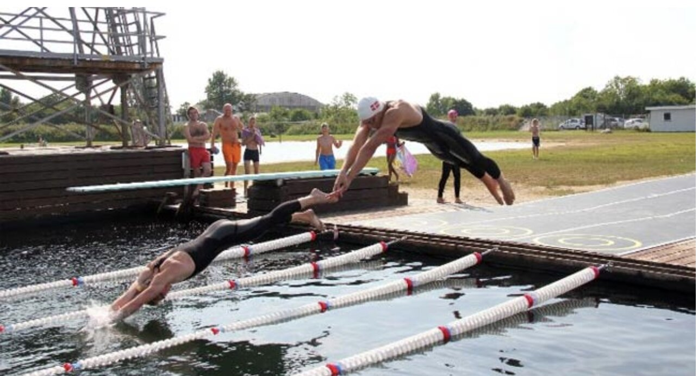

Earthing is a new sport created by Mark Aaron Saus, which combines running and swimming. It is not a biathlon (which is an endurance event), but a power sprinting event over 110m. The earthing champion is the fastest human on Earth - over land and through water. This sport started in Denmark in the summer of 2013.
If you are interested to read more Click Her.